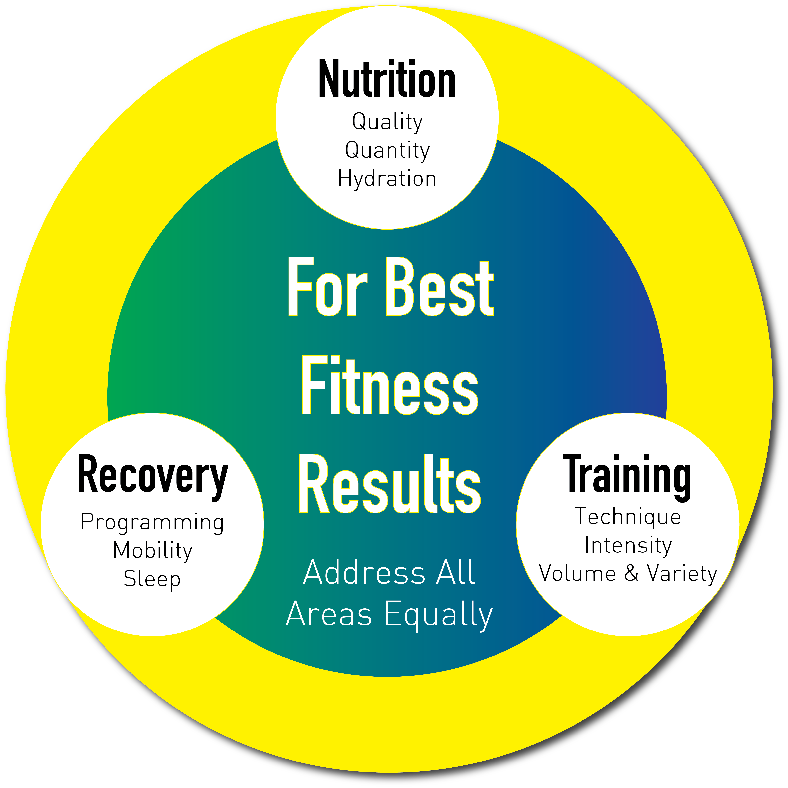
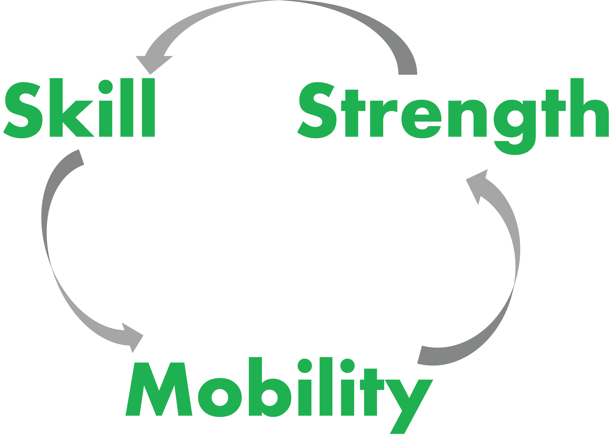

Who we are
Triptych fitness offers personal training, CrossFit programming and 5K/10K endurance programming using a unique approach to cross-training, fundamentals, weightlifting and gymnastics. If you're familiar with the philosophy of CrossFit. Triptych builds on that approach but offers an approach which takes out the guesswork from warm-up to coooldown.
Modalities
Skills and Strength

Each session will contain skill or strength work in gymnastics, olympic lifting or powerlifting. The focus of this component is breaking down a skill into its component parts and paying attention to form.
Conditioning

The conditioning piece of Triptych fitness involves a combination of the skills learned completed with high intensity. The more work you can do in a given amount of time, the greater your conditioning.
Sprinting
To get the maximum benefit from each session, this component focuses on speed for one movement - running, rowing, biking, jump rope, etc. The effort is all-out with full recovery between sets.
The Details
Philosophy
There are 3 components to the Triptych philosophy - Nutrition, Training, and Recovery. If any of these areas are not addressed in balance with the others, the results will suffer.
Improvement
Improvement is based on being able to learn a skill, have the requisite mobility and have adequate strength. If any of these areas are not present, then improvement will stagnate. In each session, we will address the weakest area for each movement, and the results will follow.
Get there.
What are you waiting for? Sign up today. Contact us.